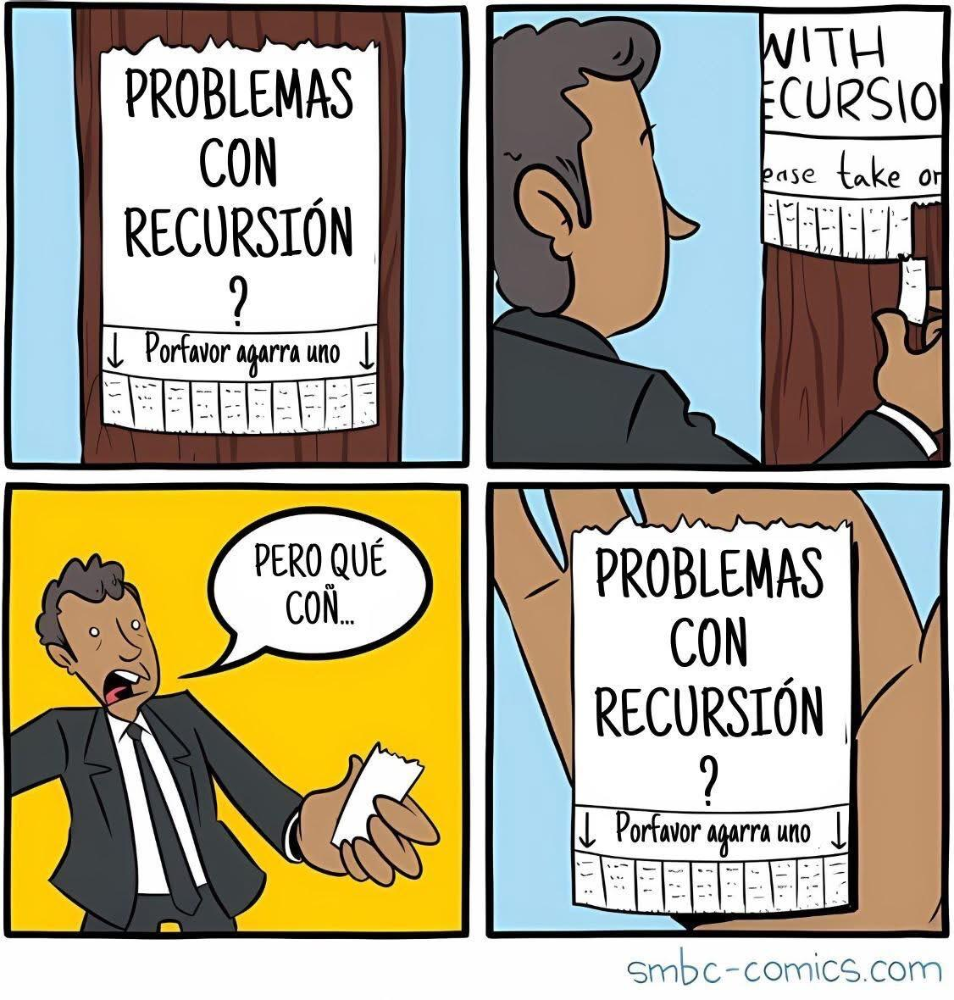

<!DOCTYPE html>
<html lang="en">
  <head>
    <meta charset="utf-8" />
    <meta name="viewport" content="width=device-width, initial-scale=1.0, maximum-scale=1.0, user-scalable=no" />

    <title></title>
    <link rel="stylesheet" href="dist/reveal.css" />
    <link rel="stylesheet" href="dist/theme/iph.css" id="theme" />
    <link rel="stylesheet" href="plugin/highlight/spyder.css" />
	<link rel="stylesheet" href="css/layout.css" />
	<link rel="stylesheet" href="plugin/customcontrols/style.css">


    <script defer src="dist/fontawesome/all.min.js"></script>

	<script type="text/javascript">
		var forgetPop = true;
		function onPopState(event) {
			if(forgetPop){
				forgetPop = false;
			} else {
				parent.postMessage(event.target.location.href, "app://obsidian.md");
			}
        }
		window.onpopstate = onPopState;
		window.onmessage = event => {
			if(event.data == "reload"){
				window.document.location.reload();
			}
			forgetPop = true;
		}

		function fitElements(){
			const itemsToFit = document.getElementsByClassName('fitText');
			for (const item in itemsToFit) {
				if (Object.hasOwnProperty.call(itemsToFit, item)) {
					var element = itemsToFit[item];
					fitElement(element,1, 1000);
					element.classList.remove('fitText');
				}
			}
		}

		function fitElement(element, start, end){

			let size = (end + start) / 2;
			element.style.fontSize = `${size}px`;

			if(Math.abs(start - end) < 1){
				while(element.scrollHeight > element.offsetHeight){
					size--;
					element.style.fontSize = `${size}px`;
				}
				return;
			}

			if(element.scrollHeight > element.offsetHeight){
				fitElement(element, start, size);
			} else {
				fitElement(element, size, end);
			}		
		}


		document.onreadystatechange = () => {
			fitElements();
			if (document.readyState === 'complete') {
				if (window.location.href.indexOf("?export") != -1){
					parent.postMessage(event.target.location.href, "app://obsidian.md");
				}
				if (window.location.href.indexOf("print-pdf") != -1){
					let stateCheck = setInterval(() => {
						clearInterval(stateCheck);
						window.print();
					}, 250);
				}
			}
	};


        </script>
  </head>
  <body>
    <div class="reveal">
      <div class="slides"><section  data-markdown><script type="text/template"><!-- .slide: class="has-light-background drop" data-background-color="#f8f8f8" -->
<div class="" style="position: absolute; left: 0px; top: 0px; height: 700px; width: 960px; min-height: 700px; display: flex; flex-direction: column; align-items: center; justify-content: center" absolute="true">

### <i class="fas fa-award"></i> IP Honores

 ####  *Buenas Prácticas*

[Eduardo Rosales](mailto:ee.rosales24@uniandes.edu.co)

Departamento de Ingeniería de Sistemas y Computación

Universidad de los Andes
</div></script></section><section  data-markdown><script type="text/template"><!-- .slide: class="has-light-background drop" data-background-color="#f8f8f8" -->
<div class="" style="position: absolute; left: 0px; top: 0px; height: 700px; width: 960px; min-height: 700px; display: flex; flex-direction: column; align-items: center; justify-content: center" absolute="true">

### Cumplimiento obligatorio

- Todas las siguientes buenas prácticas de programación
	- Son de **cumplimiento obligatorio** <!-- .element: class="fragment highlight-red" --> en IP Honores
	
<br>

- El incumplimiento de las mismas
	- Es **penalizado en la nota**  <!-- .element: class="fragment highlight-red" --> de evaluables
</div></script></section><section  data-markdown><script type="text/template"><!-- .slide: class="has-light-background drop" data-background-color="#f8f8f8" -->
<div class="" style="position: absolute; left: 0px; top: 0px; height: 700px; width: 960px; min-height: 700px; display: flex; flex-direction: column; align-items: center; justify-content: center" absolute="true">

### Índice (1/6)

- [BP-1 Reglas para identificadores en Python](https://eerosales24.github.io/iph_2025_20/general/buenas_practicas/#/8)

- [BP-2 Nombres autoexplicativos](https://eerosales24.github.io/iph_2025_20/general/buenas_practicas/#/11)

- [BP-3 Nombres concisos](https://eerosales24.github.io/iph_2025_20/general/buenas_practicas/#/12)

- [BP-4 snake_case](https://eerosales24.github.io/iph_2025_20/general/buenas_practicas/#/13)

- [BP-5 Uso de constantes](https://eerosales24.github.io/iph_2025_20/general/buenas_practicas/#/14)

- [BP-6 Nombramiento de constantes](https://eerosales24.github.io/iph_2025_20/general/buenas_practicas/#/15)

- [BP-7 Documentación de funciones](https://eerosales24.github.io/iph_2025_20/general/buenas_practicas/#/16)

- [BP-8 Casos de prueba](https://eerosales24.github.io/iph_2025_20/general/buenas_practicas/#/17)
</div></script></section><section  data-markdown><script type="text/template"><!-- .slide: class="has-light-background drop" data-background-color="#f8f8f8" -->
<div class="" style="position: absolute; left: 0px; top: 0px; height: 700px; width: 960px; min-height: 700px; display: flex; flex-direction: column; align-items: center; justify-content: center" absolute="true">

### Índice (2/6)

- [BP-9 Tipos de dato en la signatura](https://eerosales24.github.io/iph_2025_20/general/buenas_practicas/#/18)

- [BP-10 Cumplimiento del SRP](https://eerosales24.github.io/iph_2025_20/general/buenas_practicas/#/19)

- [BP-11 Uso de variables locales](https://eerosales24.github.io/iph_2025_20/general/buenas_practicas/#/23)

- [BP-12 Funciones integradas](https://eerosales24.github.io/iph_2025_20/general/buenas_practicas/#/25)

- [BP-13 Responsabilidades de la lógica](https://eerosales24.github.io/iph_2025_20/general/buenas_practicas/#/27)

- [BP-14 Responsabilidades de la interfaz](https://eerosales24.github.io/iph_2025_20/general/buenas_practicas/#/28)

- [BP-15 Comentarios](https://eerosales24.github.io/iph_2025_20/general/buenas_practicas/#/29)

- [BP-16 Nombramiento de funciones booleanas](https://eerosales24.github.io/iph_2025_20/general/buenas_practicas/#/33)
</div></script></section><section  data-markdown><script type="text/template"><!-- .slide: class="has-light-background drop" data-background-color="#f8f8f8" -->
<div class="" style="position: absolute; left: 0px; top: 0px; height: 700px; width: 960px; min-height: 700px; display: flex; flex-direction: column; align-items: center; justify-content: center" absolute="true">

### Índice (3/6)

- [BP-17 Retorno directo de expresiones booleanas](https://eerosales24.github.io/iph_2025_20/general/buenas_practicas/#/35)

- [BP-18 Uso de operadores relacionales compuestos](https://eerosales24.github.io/iph_2025_20/general/buenas_practicas/#/38)

- [BP-19 Nunca interrumpir un condicional con un `return`](https://eerosales24.github.io/iph_2025_20/general/buenas_practicas/#/39)

- [BP-20 Comparación con `None`](https://eerosales24.github.io/iph_2025_20/general/buenas_practicas/#/41)

- [BP-21 `is` e `is not` no se usan con literales](https://eerosales24.github.io/iph_2025_20/general/buenas_practicas/#/43)

- [BP-22: Uso seguro de `min()` y `max()`](https://eerosales24.github.io/iph_2025_20/general/buenas_practicas/#/44)

 - [BP-23: Validaciones seguras de métodos de `str`](https://eerosales24.github.io/iph_2025_20/general/buenas_practicas/#/45)
</div></script></section><section  data-markdown><script type="text/template"><!-- .slide: class="has-light-background drop" data-background-color="#f8f8f8" -->
<div class="" style="position: absolute; left: 0px; top: 0px; height: 700px; width: 960px; min-height: 700px; display: flex; flex-direction: column; align-items: center; justify-content: center" absolute="true">

### Índice (4/6)

- [BP-24: Definir el caso base](https://eerosales24.github.io/iph_2025_20/general/buenas_practicas/#/47)

- [BP-25: Converger al caso base](https://eerosales24.github.io/iph_2025_20/general/buenas_practicas/#/48)

- [BP-26: Usar una variable de control para while](https://eerosales24.github.io/iph_2025_20/general/buenas_practicas/#/50)

- [BP-27 Usar nombres de variables autoexplicativos al iterar](https://eerosales24.github.io/iph_2025_20/general/buenas_practicas/#/53)

- [BP-28 No remover elementos durante un recorrido](https://eerosales24.github.io/iph_2025_20/general/buenas_practicas/#/56)

- [BP-29: Validaciones seguras de métodos de `list`](https://eerosales24.github.io/iph_2025_20/general/buenas_practicas/#/59)

- [BP-30 Evitar pasar y modificar mutables en funciones](https://eerosales24.github.io/iph_2025_20/general/buenas_practicas/#/64)

- [BP-31: Evitar uso innecesario de `readline()`](https://eerosales24.github.io/iph_2025_20/general/buenas_practicas/#/66)
</div></script></section><section  data-markdown><script type="text/template"><!-- .slide: class="has-light-background drop" data-background-color="#f8f8f8" -->
<div class="" style="position: absolute; left: 0px; top: 0px; height: 700px; width: 960px; min-height: 700px; display: flex; flex-direction: column; align-items: center; justify-content: center" absolute="true">

### Índice (5/6)

- [BP-32 Acceder de forma segura a estructuras compuestas](https://eerosales24.github.io/iph_2025_20/general/buenas_practicas/#/67)

- [BP-33 Usar `for-in` cuando no se necesite procesar índices](https://eerosales24.github.io/iph_2025_20/general/buenas_practicas/#/72)

- [BP-34 Usar  el patrón de recorrido adecuado](https://eerosales24.github.io/iph_2025_20/general/buenas_practicas/#/73)

- [BP-35: Nunca interrumpir un ciclo](https://eerosales24.github.io/iph_2025_20/general/buenas_practicas/#/74)

- [BP-36: Validación segura de métodos de `tuple.index()`](https://eerosales24.github.io/iph_2025_20/general/buenas_practicas/#/75)

- [BP-37: Usar nombres autoexplicativos para filas, columnas y elementos](https://eerosales24.github.io/iph_2025_20/general/buenas_practicas/#/76)
</div></script></section><section  data-markdown><script type="text/template"><!-- .slide: class="has-light-background drop" data-background-color="#f8f8f8" -->
<div class="" style="position: absolute; left: 0px; top: 0px; height: 700px; width: 960px; min-height: 700px; display: flex; flex-direction: column; align-items: center; justify-content: center" absolute="true">

### Índice (5/6)

- En construcción...
</div></script></section><section  data-markdown><script type="text/template"><!-- .slide: class="has-light-background drop" data-background-color="#f8f8f8" -->
<div class="" style="position: absolute; left: 0px; top: 0px; height: 700px; width: 960px; min-height: 700px; display: flex; flex-direction: column; align-items: center; justify-content: center" absolute="true">

### BP-1 Reglas para identificadores en Python (1/3)

- **Identificador**: Nombre textual que se da a
	- Una variable
	- Una función
	- Y otros elementos en Python...
</div></script></section><section  data-markdown><script type="text/template"><!-- .slide: class="has-light-background drop" data-background-color="#f8f8f8" -->
<div class="" style="position: absolute; left: 0px; top: 0px; height: 700px; width: 960px; min-height: 700px; display: flex; flex-direction: column; align-items: center; justify-content: center" absolute="true">

### BP-1 Reglas para identificadores en Python (2/3)

- Según la convención [PEP 8 Style](https://peps.python.org/pep-0008/#naming-conventions)

<br>

- Sensible a mayúsculas y minúsculas
- Debe comenzar con una letra o guión bajo: 
	- (a-z, A-Z) o _
- Solo puede contener:
	- Letras (a-z, A-Z), 
	- Dígitos (0-9) 
	- Guiones bajos _
</div></script></section><section  data-markdown><script type="text/template"><!-- .slide: class="has-light-background drop" data-background-color="#f8f8f8" -->
<div class="" style="position: absolute; left: 0px; top: 0px; height: 700px; width: 960px; min-height: 700px; display: flex; flex-direction: column; align-items: center; justify-content: center" absolute="true">

### BP-1 Reglas para identificadores en Python (3/3)

- Según la convención [PEP 8 Style](https://peps.python.org/pep-0008/#naming-conventions)

<br>


- ❌ Caracteres especiales 
	- Ej: -, !, @, #, $, %, etc.
- ❌ Espacios 
	- En su lugar, use guiones bajos _
- ❌ [Palabras clave de Python](https://docs.python.org/3/reference/lexical_analysis.html#keywords)
</div></script></section><section  data-markdown><script type="text/template"><!-- .slide: class="has-light-background drop" data-background-color="#f8f8f8" -->
<div class="" style="position: absolute; left: 0px; top: 0px; height: 700px; width: 960px; min-height: 700px; display: flex; flex-direction: column; align-items: center; justify-content: center" absolute="true">

### BP-2 Nombres autoexplicativos

- Usar identificadores **autoexplicativos**
	- Nombre de variable = su propósito en el programa
	- Nombre de función = su propósito en el programa
- Ej:
	 - ❌ alt
	 - ✅  altura
</div></script></section><section  data-markdown><script type="text/template"><!-- .slide: class="has-light-background drop" data-background-color="#f8f8f8" -->
<div class="" style="position: absolute; left: 0px; top: 0px; height: 700px; width: 960px; min-height: 700px; display: flex; flex-direction: column; align-items: center; justify-content: center" absolute="true">

### BP-3 Nombres concisos

- Usar identificadores **concisos**
	- Nombres largos son difíciles de leer
	- Ej: 
		- ❌ numero_de_estudiantes_inscritos_en_el_curso_ahora
		 - ✅  estudiantes_inscritos
</div></script></section><section  data-markdown><script type="text/template"><!-- .slide: class="has-light-background drop" data-background-color="#f8f8f8" -->
<div class="" style="position: absolute; left: 0px; top: 0px; height: 700px; width: 960px; min-height: 700px; display: flex; flex-direction: column; align-items: center; justify-content: center" absolute="true">

### BP-4 snake_case

- Por legibilidad, usar **snake_case**
	- Es decir, separar palabras con guiones bajos
		- Y siempre usar minúsculas
	- Ej: 
		- `salario_promedio`
		- `altura_maxima`
</div></script></section><section  data-markdown><script type="text/template"><!-- .slide: class="has-light-background drop" data-background-color="#f8f8f8" -->
<div class="" style="position: absolute; left: 0px; top: 0px; height: 700px; width: 960px; min-height: 700px; display: flex; flex-direction: column; align-items: center; justify-content: center" absolute="true">

### BP-5 Uso de constantes

- Los valores fijos en el programa se modelan como constantes
- Ej:
	```Python
	ALTURA_MAXIMA = 30.67
	PI = 3.14
	```
</div></script></section><section  data-markdown><script type="text/template"><!-- .slide: class="has-light-background drop" data-background-color="#f8f8f8" -->
<div class="" style="position: absolute; left: 0px; top: 0px; height: 700px; width: 960px; min-height: 700px; display: flex; flex-direction: column; align-items: center; justify-content: center" absolute="true">

### BP-6 Nombramiento de constantes


- Los nombres de constantes se escriben en **mayúsculas** por convención\*
- Ej: 
	```Python
	PESO_PROMEDIO = 200.15
	LIMITE_VELOCIDAD = 60
	IVA = .19
	```

<br>

\* Al nombramiento de constantes, le aplica BP-1 a BP-4
</div></script></section><section  data-markdown><script type="text/template"><!-- .slide: class="has-light-background drop" data-background-color="#f8f8f8" -->
<div class="" style="position: absolute; left: 0px; top: 0px; height: 700px; width: 960px; min-height: 700px; display: flex; flex-direction: column; align-items: center; justify-content: center" absolute="true">

### BP-7 Documentación de funciones

- Las funciones deben documentarse\*
	- [PEP 257](https://peps.python.org/pep-0257/)

- Aquí el formato genérico de un docstring:

```python
    """
    Propósito de la función.

    Args:
        nombre parametro 1 (tipo del parametro 1): Descripción.
        ...
        nombre parametro n (tipo del parametro n): Descripción.
        
    Returns:
        tipo de retorno: Descripción del valor de retorno.
    """
```

<br>

\* La única excepción en Nivel 1, son las funciones en consolas
</div></script></section><section  data-markdown><script type="text/template"><!-- .slide: class="has-light-background drop" data-background-color="#f8f8f8" -->
<div class="" style="position: absolute; left: 0px; top: 0px; height: 700px; width: 960px; min-height: 700px; display: flex; flex-direction: column; align-items: center; justify-content: center" absolute="true">

### BP-8 Casos de prueba

- Las funciones deben incluir varios de casos de prueba\*
	- En forma de doctests
- Cada doctest debe ser significativo y no redundante
- Cada doctest debe estar documentado
	- De forma muy concisa y clara
- Ej:

```Python
   """
        ...
        
        >>> suma(0, 0)  # Caso solo ceros
        0
        >>> suma(2, 2)  # Caso enteros positivos
        4
        >>> suma(-2, -10)  # Caso enteros negativos
        -12
        >>> suma(-2, 5)  # Caso enteros positivos y negativos
        3
   """
```

<br>

\* La excepción en Nivel 1, son las funciones en consolas y las que producen resultados aleatorios o gráficos (PyTamaro)
</div></script></section><section  data-markdown><script type="text/template"><!-- .slide: class="has-light-background drop" data-background-color="#f8f8f8" -->
<div class="" style="position: absolute; left: 0px; top: 0px; height: 700px; width: 960px; min-height: 700px; display: flex; flex-direction: column; align-items: center; justify-content: center" absolute="true">

### BP-9 Tipos de dato en la signatura

- Siempre incluir en la signatura
	- El(los) tipo(s) de parámetro(s) y el tipo de retorno

- Aquí el formato genérico de uNa signatura:

```Python[2-5]
def 
nombre_funcion
(parametro_1: tipo_parametro_1 ... 
 parametro_n: tipo_parametro_n) 
 -> tipo_de_retorno:
     # Cuerpo de la función
```
</div></script></section><section  data-markdown><script type="text/template"><!-- .slide: class="has-light-background drop" data-background-color="#f8f8f8" -->
<div class="" style="position: absolute; left: 0px; top: 0px; height: 700px; width: 960px; min-height: 700px; display: flex; flex-direction: column; align-items: center; justify-content: center" absolute="true">

### BP-10 Cumplimiento del SRP (1/4)


- Aplicar el Principio de Responsabilidad Única (Single Responsibility Principle) - SRP 
	- **"Una función debe tener una, y solo una, razón para cambiar"**
		-  Una función debe tener un  **propósito único**
-  Si una función tiene dos o más propósitos
	- Es una indicación
		- De que la implementación se debería distribuir 
			- En dos o más funciones
</div></script></section><section  data-markdown><script type="text/template"><!-- .slide: class="has-light-background drop" data-background-color="#f8f8f8" -->
<div class="" style="position: absolute; left: 0px; top: 0px; height: 700px; width: 960px; min-height: 700px; display: flex; flex-direction: column; align-items: center; justify-content: center" absolute="true">

### BP-10 Cumplimiento del SRP (2/4)

- No duplicar código
	- Si una función requiere de otra para cumplir su propósito
		- Se debe invocar a esa función
	- La composición de funciones
		- Evita la duplicación de código
</div></script></section><section  data-markdown><script type="text/template"><!-- .slide: class="has-light-background drop" data-background-color="#f8f8f8" -->
<div class="" style="position: absolute; left: 0px; top: 0px; height: 700px; width: 960px; min-height: 700px; display: flex; flex-direction: column; align-items: center; justify-content: center" absolute="true">

### BP-10 Cumplimiento del SRP (3/4)

- Limitar el tamaño del cuerpo de la función
	- Un cuerpo con demasiadas líneas podría indicar
		- Que se debe distribuir la implementación
			- En dos o más funciones
</div></script></section><section  data-markdown><script type="text/template"><!-- .slide: class="has-light-background drop" data-background-color="#f8f8f8" -->
<div class="" style="position: absolute; left: 0px; top: 0px; height: 700px; width: 960px; min-height: 700px; display: flex; flex-direction: column; align-items: center; justify-content: center" absolute="true">

### BP-10 Cumplimiento del SRP (4/4)


- Limitar el tamaño de la lista de parámetros
	- Demasiados parámetros podrían indicar
		- Que se debe distribuir la implementación
			- En dos o más funciones
</div></script></section><section  data-markdown><script type="text/template"><!-- .slide: class="has-light-background drop" data-background-color="#f8f8f8" -->
<div class="" style="position: absolute; left: 0px; top: 0px; height: 700px; width: 960px; min-height: 700px; display: flex; flex-direction: column; align-items: center; justify-content: center" absolute="true">

### BP-11 Uso de variables locales (1/2)

- La variables, incluyendo a las constantes
	- Deben ser locales al contexto en donde son usadas
- Ej:
```Python
def volumen_cilindro(radio_base: float, altura: float) -> float:
    PI = 3.1416
    area_base = PI * radio_base * radio_base
    return area_base * altura
```

- Aquí `PI` es definida adentro de `volumen_cilindro`
	- Porque es la única función que la usa
</div></script></section><section  data-markdown><script type="text/template"><!-- .slide: class="has-light-background drop" data-background-color="#f8f8f8" -->
<div class="" style="position: absolute; left: 0px; top: 0px; height: 700px; width: 960px; min-height: 700px; display: flex; flex-direction: column; align-items: center; justify-content: center" absolute="true">

### BP-11 Uso de variables locales (2/2)

```Python
PI = 3.1416

def volumen_cilindro(radio_base: float, altura: float) -> float:
    area_base = PI * radio_base * radio_base
    return area_base * altura

def area_circulo(radio: float) -> float:
    return PI * radio ** 2
```


- Aquí `PI` es definida de forma externa a las funciones
	- Porque así se puede usar en ambas funciones
</div></script></section><section  data-markdown><script type="text/template"><!-- .slide: class="has-light-background drop" data-background-color="#f8f8f8" -->
<div class="" style="position: absolute; left: 0px; top: 0px; height: 700px; width: 960px; min-height: 700px; display: flex; flex-direction: column; align-items: center; justify-content: center" absolute="true">

### BP-12 Funciones integradas (1/2)

- No "reinventar la rueda":
    - Use funciones integradas (<a href="https://docs.python.org/3/library/functions.html" target="_blank" rel="noopener noreferrer">built-in functions</a>):
    - Tipos: <a href="https://docs.python.org/3/library/functions.html#type" target="_blank" rel="noopener noreferrer">type()</a>,    <a href="https://docs.python.org/3/library/functions.html#float" target="_blank" rel="noopener noreferrer">float()</a>,  <a href="https://docs.python.org/3/library/functions.html#int" target="_blank" rel="noopener noreferrer">int()</a>,  <a href="https://docs.python.org/3/library/functions.html#func-str" target="_blank" rel="noopener noreferrer">str()</a>
    - Identidad: <a href="https://docs.python.org/3/library/functions.html?highlight=id#id" target="_blank" rel="noopener noreferrer">id()</a>
    - Numéricas: <a href="https://docs.python.org/3/library/functions.html#abs" target="_blank" rel="noopener noreferrer">abs()</a>,  <a href="https://docs.python.org/3/library/functions.html#round" target="_blank" rel="noopener noreferrer">round()</a>,  <a href="https://docs.python.org/3/library/functions.html#min" target="_blank" rel="noopener noreferrer">min()</a>,  <a href="https://docs.python.org/3/library/functions.html#max" target="_blank" rel="noopener noreferrer">max()</a>,  <a href="https://docs.python.org/3/library/functions.html#pow" target="_blank" rel="noopener noreferrer">pow()</a>
    - Entrada: <a href="https://docs.python.org/3/library/functions.html#input" target="_blank" rel="noopener noreferrer">input()</a>
    - Salida: <a href="https://docs.python.org/3/library/functions.html#print" target="_blank" rel="noopener noreferrer">print()</a>
</div></script></section><section  data-markdown><script type="text/template"><!-- .slide: class="has-light-background drop" data-background-color="#f8f8f8" -->
<div class="" style="position: absolute; left: 0px; top: 0px; height: 700px; width: 960px; min-height: 700px; display: flex; flex-direction: column; align-items: center; justify-content: center" absolute="true">

### BP-12 Funciones integradas (2/2)

- No "reinventar la rueda":
	- Usar funciones de módulos estándar (Ej: <a href="https://docs.python.org/3/library/math.html" target="_blank" rel="noopener noreferrer">math</a>, <a href="https://docs.python.org/3/library/random.html" target="_blank" rel="noopener noreferrer">random</a>):
		- `math`: <a href="https://docs.python.org/3/library/math.html#math.sqrt" target="_blank" rel="noopener noreferrer">math.sqrt()</a>, <a href="https://docs.python.org/3/library/math.html#math.sin" target="_blank" rel="noopener noreferrer">math.sin()</a>, <a href="https://docs.python.org/3/library/math.html#math.cos" target="_blank" rel="noopener noreferrer">math.cos()</a>, <a href="https://docs.python.org/3/library/math.html#math.log10" target="_blank" rel="noopener noreferrer">math.log10()</a>
		- `random`: <a href="https://docs.python.org/3/library/random.html#random.random" target="_blank" rel="noopener noreferrer">random.random()</a>,  <a href="https://docs.python.org/3/library/random.html#random.randint" target="_blank" rel="noopener noreferrer">random.randint()</a>, <a href="https://docs.python.org/3/library/random.html#random.uniform" target="_blank" rel="noopener noreferrer">random.uniform()</a>
	- Ayuda: <a href="https://docs.python.org/3/library/functions.html#help" target="_blank" rel="noopener noreferrer">help()</a>
</div></script></section><section  data-markdown><script type="text/template"><!-- .slide: class="has-light-background drop" data-background-color="#f8f8f8" -->
<div class="" style="position: absolute; left: 0px; top: 0px; height: 700px; width: 960px; min-height: 700px; display: flex; flex-direction: column; align-items: center; justify-content: center" absolute="true">

### BP-13  Responsabilidades de la lógica

- La lógica **NUNCA**
	- Recibe datos de entrada
		- ❌ NO usa `input()`
	- Muestra resultados
		- ❌ NO usa `print()`
</div></script></section><section  data-markdown><script type="text/template"><!-- .slide: class="has-light-background drop" data-background-color="#f8f8f8" -->
<div class="" style="position: absolute; left: 0px; top: 0px; height: 700px; width: 960px; min-height: 700px; display: flex; flex-direction: column; align-items: center; justify-content: center" absolute="true">

### BP-14  Responsabilidades de la interfaz

- La interfaz\* **NUNCA**
	- ❌ Contiene funciones que implementan
	    - ❌ La lógica del programa

	<br>

\* En el curso, la interfaz es implementada en consolas
</div></script></section><section  data-markdown><script type="text/template"><!-- .slide: class="has-light-background drop" data-background-color="#f8f8f8" -->
<div class="" style="position: absolute; left: 0px; top: 0px; height: 700px; width: 960px; min-height: 700px; display: flex; flex-direction: column; align-items: center; justify-content: center" absolute="true">

### BP-15  Comentarios (1/4)


Según la convención [PEP 8 Style](https://peps.python.org/pep-0008/#comments)

- Comentarios de una sola línea:
	- Comienzan con `#` seguido de texto
	- Pueden contener caracteres especiales
	- Ej:
```Python
# Comentario de una sola línea
```
</div></script></section><section  data-markdown><script type="text/template"><!-- .slide: class="has-light-background drop" data-background-color="#f8f8f8" -->
<div class="" style="position: absolute; left: 0px; top: 0px; height: 700px; width: 960px; min-height: 700px; display: flex; flex-direction: column; align-items: center; justify-content: center" absolute="true">

### BP-15  Comentarios (2/4)

- Comentarios de una sola línea:
	- Por convención se colocan a dos espacios de código
	- Ej:

```Python
3.1416  # Valor de PI
```
</div></script></section><section  data-markdown><script type="text/template"><!-- .slide: class="has-light-background drop" data-background-color="#f8f8f8" -->
<div class="" style="position: absolute; left: 0px; top: 0px; height: 700px; width: 960px; min-height: 700px; display: flex; flex-direction: column; align-items: center; justify-content: center" absolute="true">

### BP-15  Comentarios (3/4)

- Comentarios en bloque:
	- Agrupación de múltiples comentarios
	- Cada uno empezando con `#`
		- Se puede usar indentación

- Ej:

```Python
   # Primera línea de un comentario en bloque
   # Segunda línea
   #     Tercera línea
```
</div></script></section><section  data-markdown><script type="text/template"><!-- .slide: class="has-light-background drop" data-background-color="#f8f8f8" -->
<div class="" style="position: absolute; left: 0px; top: 0px; height: 700px; width: 960px; min-height: 700px; display: flex; flex-direction: column; align-items: center; justify-content: center" absolute="true">

### BP-15  Comentarios (4/4)

- Moderación: 
	- Evite el exceso de comentarios
		- Deteriora la legibilidad
- Claridad: 
	- Comente segmentos significativos/complejos de código
		- ❌ Explicar el código línea a línea
</div></script></section><section  data-markdown><script type="text/template"><!-- .slide: class="has-light-background drop" data-background-color="#f8f8f8" -->
<div class="" style="position: absolute; left: 0px; top: 0px; height: 700px; width: 960px; min-height: 700px; display: flex; flex-direction: column; align-items: center; justify-content: center" absolute="true">

### BP-16  Nonbramiento de funciones booleanas (1/2)

- Las funciones booleanas 
	- Deben nombrarse como si fuesen preguntas
		- Cuya respuesta es `True`  o  `False`
- Ej:

```Python
esta_activo()

esta_encendido()

tiene_permiso()

es_valido()
```
</div></script></section><section  data-markdown><script type="text/template"><!-- .slide: class="has-light-background drop" data-background-color="#f8f8f8" -->
<div class="" style="position: absolute; left: 0px; top: 0px; height: 700px; width: 960px; min-height: 700px; display: flex; flex-direction: column; align-items: center; justify-content: center" absolute="true">

### BP-16  Nonbramiento de funciones booleanas (2/2)

- Se debe nombrar a las funciones booleanas
	- **Sin usar negaciones**
- Ej:
  
✅
```Python
es_valido()   # Nombramiento correcto y claro
```

❌
```Python
 es_invalido()  # Mal nombramiento (evitar negaciones)
```
</div></script></section><section  data-markdown><script type="text/template"><!-- .slide: class="has-light-background drop" data-background-color="#f8f8f8" -->
<div class="" style="position: absolute; left: 0px; top: 0px; height: 700px; width: 960px; min-height: 700px; display: flex; flex-direction: column; align-items: center; justify-content: center" absolute="true">

### BP-17 Retorno directo de expresiones booleanas (1/2)

- Cuando sea posible
	- Retorne directamente la expresión booleana
- Ej:

```Python[3]
# Práctica correcta:
def es_par(num: int) -> bool:  
    return num % 2 == 0
```
</div></script></section><section  data-markdown><script type="text/template"><!-- .slide: class="has-light-background drop" data-background-color="#f8f8f8" -->
<div class="" style="position: absolute; left: 0px; top: 0px; height: 700px; width: 960px; min-height: 700px; display: flex; flex-direction: column; align-items: center; justify-content: center" absolute="true">

### BP-17 Retorno directo de expresiones booleanas (2/3)

- Cuando sea posible
	- Retorne directamente la expresión booleana
		- **Sin usar condicionales innecesarios**
- Ej:

```Python
# Práctica correcta:
def es_multiplo(dividendo: int, divisor: int) -> bool:
    return divisor != 0 and dividendo % divisor == 0
```

- Se evitó el uso de `if`
</div></script></section><section  data-markdown><script type="text/template"><!-- .slide: class="has-light-background drop" data-background-color="#f8f8f8" -->
<div class="" style="position: absolute; left: 0px; top: 0px; height: 700px; width: 960px; min-height: 700px; display: flex; flex-direction: column; align-items: center; justify-content: center" absolute="true">

### BP-17 Retorno directo de expresiones booleanas (3/3)

- Claridad y legibilidad
	- Hace el código más conciso y legible
- Eficiencia: 
	- Evita estructuras condicionales innecesarias
- Mantenimiento: 
	- Facilita la modificación 
		- Y depuración del código
</div></script></section><section  data-markdown><script type="text/template"><!-- .slide: class="has-light-background drop" data-background-color="#f8f8f8" -->
<div class="" style="position: absolute; left: 0px; top: 0px; height: 700px; width: 960px; min-height: 700px; display: flex; flex-direction: column; align-items: center; justify-content: center" absolute="true">

### BP-18 Uso de operadores relacionales compuestos

-  Evite operaciones ineficientes
	- Usando operadores relacionales compuestos
- Ej: 

```Python
x < y < z 

# No es lo mismo que:

(x < y) and (y < z)
```

- `x < y < z` es más eficiente aquí
	- Porque se evalúa a `y` 
		- **Una sola vez**
</div></script></section><section  data-markdown><script type="text/template"><!-- .slide: class="has-light-background drop" data-background-color="#f8f8f8" -->
<div class="" style="position: absolute; left: 0px; top: 0px; height: 700px; width: 960px; min-height: 700px; display: flex; flex-direction: column; align-items: center; justify-content: center" absolute="true">

### BP-19 Nunca interrumpir un condicional con un `return` (1/2)

- No interrumpir un condicional
	- Con la instrucción `return` (u otras)
- Ej:
```Python
def resultado_examen(puntuacion: float) -> str:
    resultado = 'no aprobado'  # variable de retorno
    if puntuacion >= 60:
        resultado = 'aprobado'
    return resultado  # Hay un solo retorno
```

- ✅ Hay un sólo `return` en la función
- ✅ Se usa una variable de retorno (`resultado`)
</div></script></section><section  data-markdown><script type="text/template"><!-- .slide: class="has-light-background drop" data-background-color="#f8f8f8" -->
<div class="" style="position: absolute; left: 0px; top: 0px; height: 700px; width: 960px; min-height: 700px; display: flex; flex-direction: column; align-items: center; justify-content: center" absolute="true">

### BP-19 Nunca interrumpir un condicional con un `return` (2/2)

- ❌ Interrumpir un condicional
	- Con la instrucción `return` (u otras)
- Ej:
  
```Python[3,4]
def resultado_examen(puntuacion: float) -> str:
    if puntuacion >= 60:
        return 'aprobado'
	return 'no aprobado'
```

- ❌ Se interrumpe un condicional con `return`
- ❌ No se usó una variable de retorno
- ❌ Hay varios `return` en la función
</div></script></section><section  data-markdown><script type="text/template"><!-- .slide: class="has-light-background drop" data-background-color="#f8f8f8" -->
<div class="" style="position: absolute; left: 0px; top: 0px; height: 700px; width: 960px; min-height: 700px; display: flex; flex-direction: column; align-items: center; justify-content: center" absolute="true">

### BP-20  Comparación con `None` (1/2)


- Se debe usar `is`al probar igualdad con `None` 
- Ej:

✅
```Python
x is None  
```

❌
```Python
x == None
```
</div></script></section><section  data-markdown><script type="text/template"><!-- .slide: class="has-light-background drop" data-background-color="#f8f8f8" -->
<div class="" style="position: absolute; left: 0px; top: 0px; height: 700px; width: 960px; min-height: 700px; display: flex; flex-direction: column; align-items: center; justify-content: center" absolute="true">

### BP-20  Comparación con `None` (2/2)

- Ser debe usar `is not` al probar desigualdad con `None` 
- Ej:

✅
```Python
x is not None
```

❌
```Python
x != None
```
</div></script></section><section  data-markdown><script type="text/template"><!-- .slide: class="has-light-background drop" data-background-color="#f8f8f8" -->
<div class="" style="position: absolute; left: 0px; top: 0px; height: 700px; width: 960px; min-height: 700px; display: flex; flex-direction: column; align-items: center; justify-content: center" absolute="true">

### BP-21  `is` e `is not` no se usan con literales

- No usar `is`  e  `is not` 
	- Con valores literales
- Ej:

✅
```Python
x == 'abc'
x != 5
x == True
```

❌
```Python
x is 'abc'
x is not 5
x is True
```
</div></script></section><section  data-markdown><script type="text/template"><!-- .slide: class="has-light-background drop" data-background-color="#f8f8f8" -->
<div class="" style="position: absolute; left: 0px; top: 0px; height: 700px; width: 960px; min-height: 700px; display: flex; flex-direction: column; align-items: center; justify-content: center" absolute="true">

### BP-22: Uso seguro de `min()` y `max()`

- Considerar el caso de **secuencias vacías** al usar `min()` o `max()`
	- Usar `default` para evitar [`ValueError`](https://eerosales24.github.io/iph_2025_20/general/errores_comunes/#/10) 
		- Cuando las estructura esté vacía:

	<br>

```python
cadena = ""
lista = []
```


✅ Seguro:
```python
min(cadena, default='N/A')
max(lista, default='N/A')
```

<br>

 ❌ Inseguro:
```python
min(cadena)  # ValueError
max(lista)  # ValueError
```
</div></script></section><section  data-markdown><script type="text/template"><!-- .slide: class="has-light-background drop" data-background-color="#f8f8f8" -->
<div class="" style="position: absolute; left: 0px; top: 0px; height: 700px; width: 960px; min-height: 700px; display: flex; flex-direction: column; align-items: center; justify-content: center" absolute="true">

### BP-23: Validaciones seguras de métodos de `str` (1/2)

- Considerar que algunos métodos de `str` 
	- Retornan `False` cuando se llaman sobre un **string vacío** 
		- En lugar de lanzar error
		- Ej:
		
```python
''.isalpha()   # → False

''.isalnum()   # → False

''.isdigit()   # → False

''.islower()   # → False

''.isspace()   # → False
```
</div></script></section><section  data-markdown><script type="text/template"><!-- .slide: class="has-light-background drop" data-background-color="#f8f8f8" -->
<div class="" style="position: absolute; left: 0px; top: 0px; height: 700px; width: 960px; min-height: 700px; display: flex; flex-direction: column; align-items: center; justify-content: center" absolute="true">

### BP-23: Validaciones seguras de métodos de `str` (2/2)

- Para evitar errores lógicos silenciosos
	- Se recomienda validar antes si el string está vacío
	- Ej:
	
```python
nombre = input("Digite su nombre: ")

if nombre and nombre.isalpha():
    # No vacío y alfabético:
    print("Nombre válido")
else:
    print("Nombre inválido")
```
</div></script></section><section  data-markdown><script type="text/template"><!-- .slide: class="has-light-background drop" data-background-color="#f8f8f8" -->
<div class="" style="position: absolute; left: 0px; top: 0px; height: 700px; width: 960px; min-height: 700px; display: flex; flex-direction: column; align-items: center; justify-content: center" absolute="true">

### BP-24: Definir el caso base

- El caso base es obligatorio porque
	- Detiene la recursión
	
- Puede haber uno o mútliples
	- Casos base

- El caso base evita
	- Una **recursión infinita** que provoque un [RecursionError](https://eerosales24.github.io/iph_2025_20/general/errores_comunes/#/33)
</div></script></section><section  data-markdown><script type="text/template"><!-- .slide: class="has-light-background drop" data-background-color="#f8f8f8" -->
<div class="" style="position: absolute; left: 0px; top: 0px; height: 700px; width: 960px; min-height: 700px; display: flex; flex-direction: column; align-items: center; justify-content: center" absolute="true">

### BP-25: Converger al caso base (1/2)

- Toda función recursiva debe estar diseñada 
	- Para que cada llamada 
		- Avance hacia el caso base

- Si hay múltiples casos recursivos, deben ser disyuntos
	- Y todos deben converger a un caso base
</div></script></section><section  data-markdown><script type="text/template"><!-- .slide: class="has-light-background drop" data-background-color="#f8f8f8" -->
<div class="" style="position: absolute; left: 0px; top: 0px; height: 700px; width: 960px; min-height: 700px; display: flex; flex-direction: column; align-items: center; justify-content: center" absolute="true">

### BP-25: Converger al caso base (2/2)


- Si no hay avance hacia el o los casos base
	- La recursión puede ser infinita ([RecursionError](https://eerosales24.github.io/iph_2025_20/general/errores_comunes/#/33))



</div></script></section><section  data-markdown><script type="text/template"><!-- .slide: class="has-light-background drop" data-background-color="#f8f8f8" -->
<div class="" style="position: absolute; left: 0px; top: 0px; height: 700px; width: 960px; min-height: 700px; display: flex; flex-direction: column; align-items: center; justify-content: center" absolute="true">

### BP-26: Usar una variable de control para `while` (1/3)

- Toda instrucción `while` debe tener **una variable de control** que:
	- Se inicialice correctamente
	- Se actualice dentro del cuerpo del ciclo
	- Ej:
```python
i = 0
while i < 5:
    print(i)
    i += 1  # Actualización necesaria
```
</div></script></section><section  data-markdown><script type="text/template"><!-- .slide: class="has-light-background drop" data-background-color="#f8f8f8" -->
<div class="" style="position: absolute; left: 0px; top: 0px; height: 700px; width: 960px; min-height: 700px; display: flex; flex-direction: column; align-items: center; justify-content: center" absolute="true">

### BP-26: Usar una variable de control para `while` (2/3)

- Si la instrucción `while` no maneja adecuadamente la variable de control
	- El ciclo podría ejecutarse indefinidamente
		- Y podría lanzarse un [`MemoryError`](https://docs.python.org/3/library/exceptions.html#MemoryError) o un [OverflowError](https://docs.python.org/3/library/exceptions.html#OverflowError)
	- Ej:
```python
i = 0
while i >= 0:
    print(i)
    # Este incremento erróneo de la variable de control
    # Impide que el ciclo termine:
    i += 999_999_999
```
</div></script></section><section  data-markdown><script type="text/template"><!-- .slide: class="has-light-background drop" data-background-color="#f8f8f8" -->
<div class="" style="position: absolute; left: 0px; top: 0px; height: 700px; width: 960px; min-height: 700px; display: flex; flex-direction: column; align-items: center; justify-content: center" absolute="true">

### BP-26: Usar una variable de control para `while` (3/3)

- Todo `while` debe estar diseñado para que eventualmente:
    - Su condición evalúe a `False`
		- Para prevenir bucles infinitos accidentales
		- Ej:
```python
i = 0
while True:  # Ciclo infinito
    print(i)
```
</div></script></section><section  data-markdown><script type="text/template"><!-- .slide: class="has-light-background drop" data-background-color="#f8f8f8" -->
<div class="" style="position: absolute; left: 0px; top: 0px; height: 700px; width: 960px; min-height: 700px; display: flex; flex-direction: column; align-items: center; justify-content: center" absolute="true">

### BP-27 Usar nombres de variables autoexplicativos al iterar (1/2)

- El identificador que representa el elemento actual debe ser **descriptivo**
	- Y no confundirse con el del iterable
- Ejemplos:
    
    - `for` **`letra`** `in palabra:`
    - `for` **`caracter`** `in cadena:`
    - `for` **`caracter_actual`** `in caracteres:`
    - `for` **`numero`**  `in lista:`
    - `for` **`numero_actual`**  `in numeros:`
</div></script></section><section  data-markdown><script type="text/template"><!-- .slide: class="has-light-background drop" data-background-color="#f8f8f8" -->
<div class="" style="position: absolute; left: 0px; top: 0px; height: 700px; width: 960px; min-height: 700px; display: flex; flex-direction: column; align-items: center; justify-content: center" absolute="true">

### BP-27 Usar nombres de variables autoexplicativos al iterar (2/3)

- El identificador de un iterable idealmente debe estar en plural

	<br>

- ✅ Claro:
```python
nombres = ['Ana', 'Luis', 'Carlos']
```

-  ❌ Confuso:
```python
nombre = ['Ana', 'Luis', 'Carlos'] 
```

	<br> 
- Hay nombres de iterables que ya indican plural:

- ✅ Claro:
```python
directorio = {
    'Ana': 32484650981,
    'Luis': 31234569792
}
```
</div></script></section><section  data-markdown><script type="text/template"><!-- .slide: class="has-light-background drop" data-background-color="#f8f8f8" -->
<div class="" style="position: absolute; left: 0px; top: 0px; height: 700px; width: 960px; min-height: 700px; display: flex; flex-direction: column; align-items: center; justify-content: center" absolute="true">

### BP-27 Usar nombres de variables autoexplicativos al iterar (3/3)

- El identificador que representa al iterable debe ser **descriptivo**
- Ejemplos:
    

    - `for` caracter_actual in **`caracteres`**`:`
    - `for` factura_actual  in **`facturas`**`:`
    - `for` numero_actual  in **`numeros`**`:`

	<br>

- Nombres de iterables que ya indican plural:

    - `for` persona in **`directorio`**`:`
    - `for` articulo in **`catalogo`**`:`
</div></script></section><section  data-markdown><script type="text/template"><!-- .slide: class="has-light-background drop" data-background-color="#f8f8f8" -->
<div class="" style="position: absolute; left: 0px; top: 0px; height: 700px; width: 960px; min-height: 700px; display: flex; flex-direction: column; align-items: center; justify-content: center" absolute="true">

### BP-28 No remover elementos durante un recorrido (1/3)

- Cambiar la longitud del iterable 
	- Mientras se recorre puede causar errores o resultados inesperados
	- Ej:
	
```python
lista = [1, 2, 3, 4, 5]

for x in lista:
    if x != 5:
        print(f'Removiendo: {x}')
        lista.remove(x)

print('Resultado:', lista)
```


```plaintext
Removiendo: 1
Removiendo: 3
Resultado: [2, 4, 5]
```
</div></script></section><section  data-markdown><script type="text/template"><!-- .slide: class="has-light-background drop" data-background-color="#f8f8f8" -->
<div class="" style="position: absolute; left: 0px; top: 0px; height: 700px; width: 960px; min-height: 700px; display: flex; flex-direction: column; align-items: center; justify-content: center" absolute="true">

### BP-28 No remover elementos durante un recorrido (2/3)

```python
lista = [1, 2, 3, 4, 5]

for x in lista:
    if x != 5:
        print(f'Removiendo: {x}')
        lista.remove(x)

print('Resultado:', lista)
```

-  `for` avanza por índices internos, pero al eliminar un elemento:
    - Los elementos se "corren" hacia la izquierda
    - Se **saltan elementos** sin procesar (Ej: `2` y `4`)
        
- Resultado:
	- Quedan en la lista elementos que **no fueron eliminados**
</div></script></section><section  data-markdown><script type="text/template"><!-- .slide: class="has-light-background drop" data-background-color="#f8f8f8" -->
<div class="" style="position: absolute; left: 0px; top: 0px; height: 700px; width: 960px; min-height: 700px; display: flex; flex-direction: column; align-items: center; justify-content: center" absolute="true">

### BP-28 No remover elementos durante un recorrido (3/3)

- Forma correcta
	- Recorrer una **copia** de la lista:

```python
lista = [1, 2, 3, 4, 5]

for x in lista[:]:  # Copia de la lista
    if x != 5:
        print(f'Removiendo: {x}')
        lista.remove(x)

print('Resultado:', lista)  # → Resultado: [5]
```

- Nota: Si se requiere eliminar todos los elementos
	- Se debería usar:  **`list.clear()`**
</div></script></section><section  data-markdown><script type="text/template"><!-- .slide: class="has-light-background drop" data-background-color="#f8f8f8" -->
<div class="" style="position: absolute; left: 0px; top: 0px; height: 700px; width: 960px; min-height: 700px; display: flex; flex-direction: column; align-items: center; justify-content: center" absolute="true">

### BP-29: Validaciones seguras de métodos de `list` (1/5)

- Considerar que algunos métodos de `list` 
	- Que generar errores cuando  
		- El elemento no está en la lista
		- Y/o la lista está vacía
		- Ej:
		
```python
[].index('x')  # → ValueError: 'x' is not in list

[].remove('x')  # → ValueError: list.remove(x): x not in list

[].pop()  # → IndexError: pop from empty list

[].pop(0)  # → IndexError: pop index out of range
```
</div></script></section><section  data-markdown><script type="text/template"><!-- .slide: class="has-light-background drop" data-background-color="#f8f8f8" -->
<div class="" style="position: absolute; left: 0px; top: 0px; height: 700px; width: 960px; min-height: 700px; display: flex; flex-direction: column; align-items: center; justify-content: center" absolute="true">

### BP-29: Validaciones seguras de métodos de `list` (2/5)

- Para evitar estos errores
	- Se recomienda validar antes si el elemento existe y/o no está vacía
	- Ej:
	
```python
if item in lista:
    posicion = lista.index(item)
```

```python
if item in lista:
    lista.remove(item)
```

```python
if lista != []:
    item = lista.pop()
```

```python
if i < len(lista):
    lista.pop(i)
```
</div></script></section><section  data-markdown><script type="text/template"><!-- .slide: class="has-light-background drop" data-background-color="#f8f8f8" -->
<div class="" style="position: absolute; left: 0px; top: 0px; height: 700px; width: 960px; min-height: 700px; display: flex; flex-direction: column; align-items: center; justify-content: center" absolute="true">

### BP-29: Validaciones seguras de métodos de `list` (3/5)

- `list.insert()`
	- No genera error con la lista vacía
		- Inserta en la única posición que tendrá la lista

```python
lista = []

lista.insert(10_000, 'x')  # → ['x']
```
</div></script></section><section  data-markdown><script type="text/template"><!-- .slide: class="has-light-background drop" data-background-color="#f8f8f8" -->
<div class="" style="position: absolute; left: 0px; top: 0px; height: 700px; width: 960px; min-height: 700px; display: flex; flex-direction: column; align-items: center; justify-content: center" absolute="true">

### BP-29: Validaciones seguras de métodos de `list` (4/5)

- `list.sort()`
	- No genera error con la lista vacía
		- No se ordena nada

```python
lista = []

lista.sort()  # → []
```
</div></script></section><section  data-markdown><script type="text/template"><!-- .slide: class="has-light-background drop" data-background-color="#f8f8f8" -->
<div class="" style="position: absolute; left: 0px; top: 0px; height: 700px; width: 960px; min-height: 700px; display: flex; flex-direction: column; align-items: center; justify-content: center" absolute="true">

### BP-29: Validaciones seguras de métodos de `list` (5/5)

- `list.sort()`
	- En general no se debe usar con distintos tipos de datos

```python
[1, 'a'].sort()  
# → TypeError: '<' not supported between instances of 'str' and 'int'
```
</div></script></section><section  data-markdown><script type="text/template"><!-- .slide: class="has-light-background drop" data-background-color="#f8f8f8" -->
<div class="" style="position: absolute; left: 0px; top: 0px; height: 700px; width: 960px; min-height: 700px; display: flex; flex-direction: column; align-items: center; justify-content: center" absolute="true">

### BP-30: Evitar pasar y modificar mutables en funciones (1/2)

- Evitar pasar mutables (Ej: listas o diccionarios) como argumentos
	- A no ser que se necesite 
		- Dado el propósito de la función

```python
procesar_datos(datos.copy())  # En lugar de procesar_datos(datos)
```

-  Es preferible pasar una copia a la función
	- Evitando posibles modificaciones indeseadas
</div></script></section><section  data-markdown><script type="text/template"><!-- .slide: class="has-light-background drop" data-background-color="#f8f8f8" -->
<div class="" style="position: absolute; left: 0px; top: 0px; height: 700px; width: 960px; min-height: 700px; display: flex; flex-direction: column; align-items: center; justify-content: center" absolute="true">

### BP-30: Evitar pasar y modificar mutables en funciones (2/2)

- Evitar modificar mutables dentro de una función
	- A no ser que se necesite 
		- Dado el propósito de la función


```python
def procesar_sin_modificar(data: list) -> list:
    # Hacer una copia para evitar modificar la lista:
    copia = data.copy()
    # trabajar sobre copia
```
</div></script></section><section  data-markdown><script type="text/template"><!-- .slide: class="has-light-background drop" data-background-color="#f8f8f8" -->
<div class="" style="position: absolute; left: 0px; top: 0px; height: 700px; width: 960px; min-height: 700px; display: flex; flex-direction: column; align-items: center; justify-content: center" absolute="true">

### BP-31: Evitar uso innecesario de `readline()`

- Evitar el uso innecesario de `readline()` en ciclos
	- Preferir iterar directamente sobre el archivo usando `for`

<br>

-  ❌ Innecesario:

```python
linea = archivo.readline()
while linea != '':
    print(linea)
    linea = archivo.readline()
```

<br>

-  ✅ Más claro y eficiente:

```python
with open('archivo.txt', 'r', encoding='utf-8') as archivo:
    for linea in archivo:
        print(linea)
```
</div></script></section><section  data-markdown><script type="text/template"><!-- .slide: class="has-light-background drop" data-background-color="#f8f8f8" -->
<div class="" style="position: absolute; left: 0px; top: 0px; height: 700px; width: 960px; min-height: 700px; display: flex; flex-direction: column; align-items: center; justify-content: center" absolute="true">

### BP-32 Acceder de forma segura a estructuras compuestas (1/5)

- Al acceder a una estructura compuesta
	- Asegurarse que el acceso sea seguro
- El objetivo es evitar errores como:
	- <a href="https://eerosales24.github.io/iph_2025_20/general/errores_comunes/#/25" target="_blank" rel="noopener noreferrer">KeyError</a>
</div></script></section><section  data-markdown><script type="text/template"><!-- .slide: class="has-light-background drop" data-background-color="#f8f8f8" -->
<div class="" style="position: absolute; left: 0px; top: 0px; height: 700px; width: 960px; min-height: 700px; display: flex; flex-direction: column; align-items: center; justify-content: center" absolute="true">

### BP-32 Acceder de forma segura a estructuras compuestas (2/5)

- Ejemplo con un diccionario de diccionarios:

```python
directorio = {
    'Luis': {'celular': '311 986 47 00', 'email': 'luis@hotmail.com'},
    'Ana': {'celular': '320 700 62 15', 'email': 'ana@yahoo.com'}
}
```

- ❌ Error común (cuando una llave no existe):

```python
print(directorio['Pedro']['celular'])  # → KeyError
```

- ✅ Solución segura:

```python
if 'Pedro' in directorio and 'celular' in directorio['Pedro']:
    print(directorio['Pedro']['celular'])
else:
    print('Contacto o celular no disponible.')
```
</div></script></section><section  data-markdown><script type="text/template"><!-- .slide: class="has-light-background drop" data-background-color="#f8f8f8" -->
<div class="" style="position: absolute; left: 0px; top: 0px; height: 700px; width: 960px; min-height: 700px; display: flex; flex-direction: column; align-items: center; justify-content: center" absolute="true">

### BP-32 Acceder de forma segura a estructuras compuestas (3/5)

- Ejemplo con un diccionario de listas:

```python
inscripciones = {
    'Matemáticas': ['Ana', 'Luis'],
    'Historia': ['Pedro', 'Sofía']
}
```

- ❌ Error común (cuando una llave no existe):

```python
for estudiante in inscripciones['Física']:  # → KeyError
    print(estudiante)
```

- ✅ Solución segura:

```python
if 'Física' in inscripciones:
    for estudiante in inscripciones['Física']:
        print(estudiante)
else:
    print('No hay inscripciones registradas para Física.')

```
</div></script></section><section  data-markdown><script type="text/template"><!-- .slide: class="has-light-background drop" data-background-color="#f8f8f8" -->
<div class="" style="position: absolute; left: 0px; top: 0px; height: 700px; width: 960px; min-height: 700px; display: flex; flex-direction: column; align-items: center; justify-content: center" absolute="true">

### BP-32 Acceder de forma segura a estructuras compuestas (4/5)

- Ejemplo con un diccionario de listas de diccionarios:

```python
vuelos_por_origen = {
    'Bogotá': [
        {'destino': 'Medellín', 'duracion': 60},
        {'destino': 'Cali', 'duracion': 70}
    ],
    'Cartagena': [
        {'destino': 'Barranquilla', 'duracion': 40}
    ]
}
```

- ❌ Error común (cuando una llave no existe):

```python
for vuelo in vuelos_por_origen['Cúcuta']:  # → KeyError no hay vuelos desde 'Cúcuta'
    print(vuelo['destino'])
```

- ✅ Solución segura:

```python
origen = 'Cúcuta'

if origen in vuelos_por_origen:
    for vuelo in vuelos_por_origen[origen]:
        print(vuelo['destino'])
else:
    print(f'No hay vuelos registrados desde {origen}.')
```
</div></script></section><section  data-markdown><script type="text/template"><!-- .slide: class="has-light-background drop" data-background-color="#f8f8f8" -->
<div class="" style="position: absolute; left: 0px; top: 0px; height: 700px; width: 960px; min-height: 700px; display: flex; flex-direction: column; align-items: center; justify-content: center" absolute="true">

### BP-32 Acceder de forma segura a estructuras compuestas (5/5)

- Cuando sea posible
	- Usar el método `get()` para evitar errores de llave y 
		- Para proporcionar valores por defecto
	- Ej:

```python
directorio = {
    'Luis': {'celular': '311 986 47 00', 'email': 'luis@hotmail.com'},
    'Ana': {'celular': '320 700 62 15', 'email': 'ana@yahoo.com'}
}
```

```python
email = directorio.get('Maria', {}).get('email', 'No disponible')
# → 'No disponible'
```
</div></script></section><section  data-markdown><script type="text/template"><!-- .slide: class="has-light-background drop" data-background-color="#f8f8f8" -->
<div class="" style="position: absolute; left: 0px; top: 0px; height: 700px; width: 960px; min-height: 700px; display: flex; flex-direction: column; align-items: center; justify-content: center" absolute="true">

### BP-33 Usar `for-in` cuando no se necesite procesar índices


- Es preferible usar `for-in` cuando no se requiere acceder por índice
	- Es más legible
	- Evita errores con el control de índice y 
	- Reduce código innecesario

<br>

- ❌ Evitable si no se necesita el índice:

```python
i = 0
while i < len(texto):
    ...
    i += 1
```

<br>

- ✅ Mejor opción:

```python
for letra_actual in texto:
    ...
```
</div></script></section><section  data-markdown><script type="text/template"><!-- .slide: class="has-light-background drop" data-background-color="#f8f8f8" -->
<div class="" style="position: absolute; left: 0px; top: 0px; height: 700px; width: 960px; min-height: 700px; display: flex; flex-direction: column; align-items: center; justify-content: center" absolute="true">

### BP-34 Usar  el patrón de recorrido adecuado

- Usar el patrón de recorrido total
	- **Únicamente** si se necesita procesar todos los elementos
		- Caso contrario
			- Usar un **patrón de recorrido parcial**
</div></script></section><section  data-markdown><script type="text/template"><!-- .slide: class="has-light-background drop" data-background-color="#f8f8f8" -->
<div class="" style="position: absolute; left: 0px; top: 0px; height: 700px; width: 960px; min-height: 700px; display: flex; flex-direction: column; align-items: center; justify-content: center" absolute="true">

### BP-35: Nunca interrumpir un ciclo (1/5)

- Cuando se desea recorrer una estructura hasta encontrar una condición
	- En el curso se debe usar el patrón de **recorrido parcial**
		- Este patrón **siempre** se implementa con un ciclo `while`
</div></script></section><section  data-markdown><script type="text/template"><!-- .slide: class="has-light-background drop" data-background-color="#f8f8f8" -->
<div class="" style="position: absolute; left: 0px; top: 0px; height: 700px; width: 960px; min-height: 700px; display: flex; flex-direction: column; align-items: center; justify-content: center" absolute="true">

### BP-35: Nunca interrumpir un ciclo (2/5)

- Ejemplo correcto – **Con centinela**

```python
def buscar(lista: list, valor: int) -> int:
    i = 0
    posicion = -1
    encontrado = False  # Centinela

    while i < len(lista) and not encontrado:
        if lista[i] == valor:
            encontrado = True
            posicion = i
        i += 1

    return posicion
```

- ✅ No se interrumpe el ciclo con un `return`
- ✅ Se usa una variable de retorno (`resultado`)
</div></script></section><section  data-markdown><script type="text/template"><!-- .slide: class="has-light-background drop" data-background-color="#f8f8f8" -->
<div class="" style="position: absolute; left: 0px; top: 0px; height: 700px; width: 960px; min-height: 700px; display: flex; flex-direction: column; align-items: center; justify-content: center" absolute="true">

### BP-35: Nunca interrumpir un ciclo (3/5)

- Ejemplo correcto – **Sin centinela**

```python
def buscar(lista: list, valor: int) -> int:
    i = 0
    posicion = -1

    while i < len(lista) and lista[i] != valor:
        i += 1

    if i < len(lista):
        posicion = i

    return posicion
```

- ✅ No se interrumpe el ciclo con un `return`
- ✅ Se usa una variable de retorno (`resultado`)
</div></script></section><section  data-markdown><script type="text/template"><!-- .slide: class="has-light-background drop" data-background-color="#f8f8f8" -->
<div class="" style="position: absolute; left: 0px; top: 0px; height: 700px; width: 960px; min-height: 700px; display: flex; flex-direction: column; align-items: center; justify-content: center" absolute="true">

### BP-35: Nunca interrumpir un ciclo (4/5)

- Ejemplo **incorrecto** – Interrumpir el ciclo con `return`

```python
def buscar(lista: list, valor: int) -> int:
    for i in range(len(lista)):
        if lista[i] == valor:
            return i
    return -1
```

- ❌ Se interrumpe un condicional con `return`
- ❌ No se usó una variable de retorno
- ❌ Hay más de  un `return` en la función
</div></script></section><section  data-markdown><script type="text/template"><!-- .slide: class="has-light-background drop" data-background-color="#f8f8f8" -->
<div class="" style="position: absolute; left: 0px; top: 0px; height: 700px; width: 960px; min-height: 700px; display: flex; flex-direction: column; align-items: center; justify-content: center" absolute="true">

### BP-35: Nunca interrumpir un ciclo (5/5)

- En el curso NO se estudian las siguientes instrucciones:
	- ~~`break`~~
	- ~~`continue`~~
	- ~~`exit`~~

- Usar estas instrucciones para interrumpir condicionales o ciclos
	- Se considera una **mala práctica de programación**
</div></script></section><section  data-markdown><script type="text/template"><!-- .slide: class="has-light-background drop" data-background-color="#f8f8f8" -->
<div class="" style="position: absolute; left: 0px; top: 0px; height: 700px; width: 960px; min-height: 700px; display: flex; flex-direction: column; align-items: center; justify-content: center" absolute="true">

#### BP-36: Validación segura de métodos de `tuple`

- `index()` lanza `ValueError` si el valor no está presente
- Para evitar esto
	- Se recomienda validar antes si el elemento existe y/o no está vacía
	- Ej:

```python
if x in tupla:
    posicion = tupla.index(x)
```

- ✅ Valida primero con el operador `in`.
</div></script></section><section  data-markdown><script type="text/template"><!-- .slide: class="has-light-background drop" data-background-color="#f8f8f8" -->
<div class="" style="position: absolute; left: 0px; top: 0px; height: 700px; width: 960px; min-height: 700px; display: flex; flex-direction: column; align-items: center; justify-content: center" absolute="true">

#### BP-37: Usar nombres autoexplicativos para filas, columnas y elementos

✅ Claro:

```python

for fila_actual in matriz:     
	for elemento_actual in fila_actual:         
	...`
```

❌ Puede ser confuso:

```python


for i in matriz:     
    for j in i:         
    ...

```
</div></script></section><section  data-markdown><script type="text/template"><!-- .slide: class="has-light-background drop" data-background-color="#f8f8f8" -->
<div class="" style="position: absolute; left: 0px; top: 0px; height: 700px; width: 960px; min-height: 700px; display: flex; flex-direction: column; align-items: center; justify-content: center" absolute="true">

[<i class="fas fa-home  fa-3x"></i>](https://eerosales24.github.io/iph_2025_20/#)
</div></script></section></div>
    </div>

    <script src="dist/reveal.js"></script>

    <script src="plugin/markdown/markdown.js"></script>
    <script src="plugin/highlight/highlight.js"></script>
    <script src="plugin/zoom/zoom.js"></script>
    <script src="plugin/notes/notes.js"></script>
    <script src="plugin/math/math.js"></script>
	<script src="plugin/mermaid/mermaid.js"></script>
	<script src="plugin/chart/chart.min.js"></script>
	<script src="plugin/chart/plugin.js"></script>
	<script src="plugin/customcontrols/plugin.js"></script>

    <script>
      function extend() {
        var target = {};
        for (var i = 0; i < arguments.length; i++) {
          var source = arguments[i];
          for (var key in source) {
            if (source.hasOwnProperty(key)) {
              target[key] = source[key];
            }
          }
        }
        return target;
      }

	  function isLight(color) {
		let hex = color.replace('#', '');

		// convert #fff => #ffffff
		if(hex.length == 3){
			hex = `${hex[0]}${hex[0]}${hex[1]}${hex[1]}${hex[2]}${hex[2]}`;
		}

		const c_r = parseInt(hex.substr(0, 2), 16);
		const c_g = parseInt(hex.substr(2, 2), 16);
		const c_b = parseInt(hex.substr(4, 2), 16);
		const brightness = ((c_r * 299) + (c_g * 587) + (c_b * 114)) / 1000;
		return brightness > 155;
	}

	var bgColor = getComputedStyle(document.documentElement).getPropertyValue('--r-background-color').trim();
	var isLight = isLight(bgColor);

	if(isLight){
		document.body.classList.add('has-light-background');
	} else {
		document.body.classList.add('has-dark-background');
	}

      // default options to init reveal.js
      var defaultOptions = {
        controls: true,
        progress: true,
        history: true,
        center: true,
        transition: 'default', // none/fade/slide/convex/concave/zoom
        plugins: [
          RevealMarkdown,
          RevealHighlight,
          RevealZoom,
          RevealNotes,
          RevealMath.MathJax3,
		  RevealMermaid,
		  RevealChart,
		  RevealCustomControls,
        ],


    	allottedTime: 120 * 1000,

		mathjax3: {
			mathjax: 'plugin/math/mathjax/tex-mml-chtml.js',
		},
		markdown: {
		  gfm: true,
		  mangle: true,
		  pedantic: false,
		  smartLists: false,
		  smartypants: false,
		},

		mermaid: {
			theme: isLight ? 'default' : 'dark',
		},

		customcontrols: {
			controls: [
			]
		},
      };

      // options from URL query string
      var queryOptions = Reveal().getQueryHash() || {};

      var options = extend(defaultOptions, {"width":960,"height":700,"margin":"0.025","minScale":"0.1","maxScale":"2.0","controls":"true","controlsLayout":"bottom-right","progress":"true","slideNumber":"true","center":"false","transition":"slide","transitionSpeed":"default"}, queryOptions);
    </script>

    <script>
      Reveal.initialize(options);
    </script>
  </body>

  <!-- created with Advanced Slides -->
</html>
